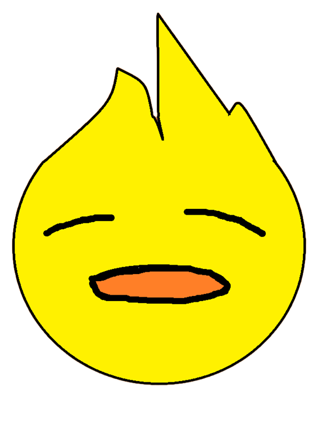

Duck Species
From the familiar mallard to sea-going eiders, hundreds of species have adapted to wildly different habitats worldwide.
🦆 duck-powered AI
Ask the internet's most opinionated duck.
Quack.ai is a small AI assistant that knows an unreasonable amount about ducks — their species, habits, diets, and the odd fact you didn't ask for. Type a question and get a real answer, duck-style.
A quick primer — then let Quack fill in the rest.
From the familiar mallard to sea-going eiders, hundreds of species have adapted to wildly different habitats worldwide.
Ducks live wherever there's water — lakes, rivers, coastlines, even city parks — and many migrate seasonally.
Most ducks eat plants, seeds, and small aquatic critters. Bread looks generous but offers little real nutrition.
Many ducklings can swim within hours of hatching, though they stay close to mom for protection and guidance.
Quacking is just one signal in a wider vocabulary of calls, postures, and wing movements ducks use to communicate.
Some ducks sleep with one eye open, staying half-alert for predators even while resting. Ask Quack for more.
Curious about something specific? Quack knows more than fits on this page — just ask.
